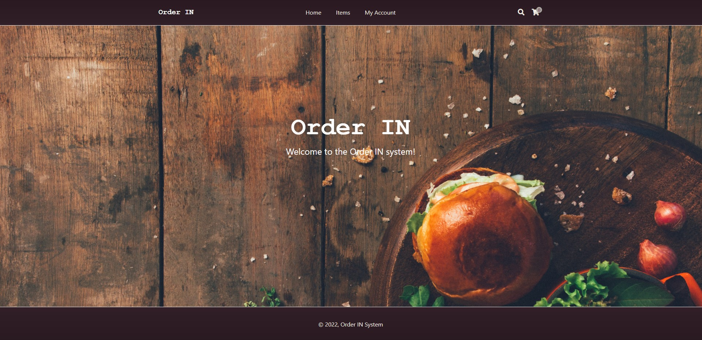
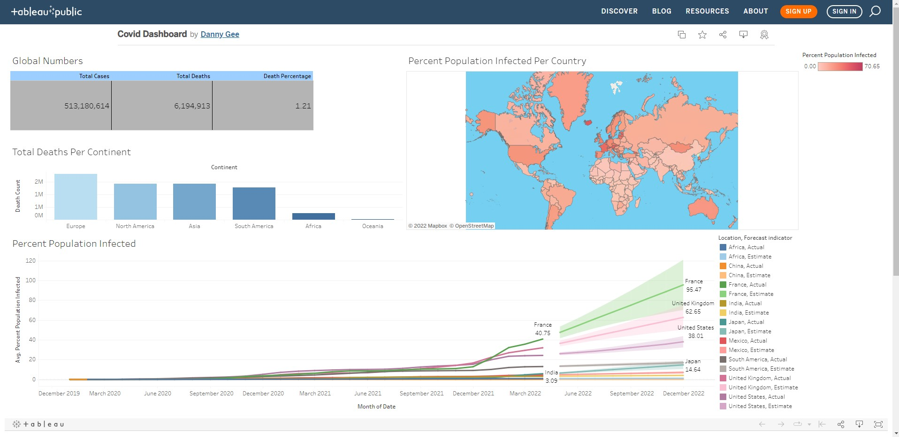

A project that features PHP, database work, and data authenticity checks.
This program features a website ordering system,
where you can order meals from restaurants and have them delivered to your doorstep with a few easy steps.
The program also lets managers apply for membership at which point they will be given a username,
which will give them access to input only their restaurant's menu items as well as the information pertaining to said item,
the stock, and also the picture to the website for customers to see.

In this project there is a file from excel and a sql file.
The sql file shows code that was used to "clean" or remove all the nulls/make the dataset looking more presentable to users.
This was made using Microsoft SQL Server Management Studio.
This project shows the use of reading and writing from JSON files and XML files.
This project also shows the use of foreach loops and LINQ queries to find a specific book.
In this project I make use of class DLL's which are class setups that you can use in any program as long as you include the folder.
In this project the classes were author which was a data member of the book class and
the publisher class which had the book class as a datmember.
Data exploration of COVID-19 dataset in SQL server.
In this project, I search through the dataset to see the different values that appear so I can use the information for future projects.

Using the information from the SQL project on the left, I made a website using Tableau to visually represent the information.
In this project we use Jupyter Notebook which is based off of Juliam Python and R programming languages.
In this project we not only clean up the null values, we also make the data look cleaner by changing some of the datatypes.
This project also showcases the use of scatterplots and a line of best fit to help determine what attributes of a movie are related to one another.
The project shows that gross heavily effects the budget in a .74 correlation value meaning the higher the budget, the higher the gross in most cases.
(Note: The closer to 1 the attributes are to one another the more they are closely related).
In this project I used excel to clean up some data about presidents using the data filter and some functions built into excel.
In this link there are two datasets, one that is not cleaned up and another that is cleaned up.